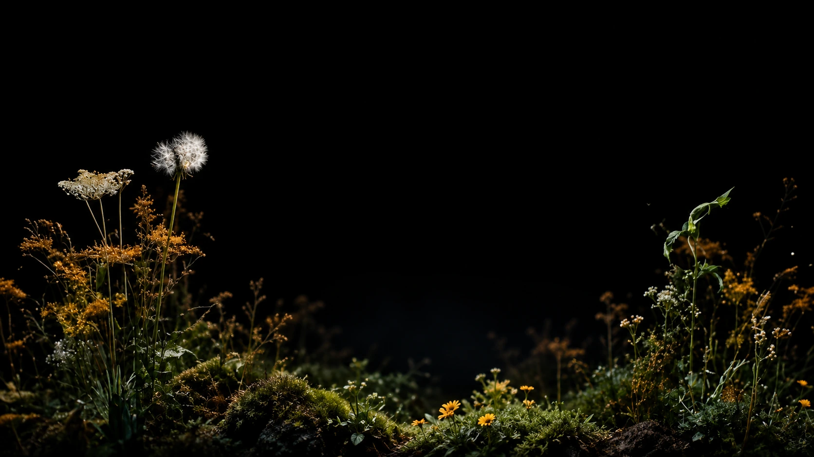

跳到首页内容

miioo
首页
剧本创作
AI 分镜
关于我们
进入工作台
开源
让每一个故事，都有新的可能
Your ideas.
Brought to
life.
从第一行剧本，到最后一帧画面。
与 MIIOO 一起，让灵感自然生长。
开始免费创作
分镜工作台
交互示例
M
一座会呼吸的花园
短片分镜 · 以自然为灵感
打开分镜
镜头
画面内容
景别
声音
阶段
01
晨光穿过薄雾，花园苏醒
远景
自然环境声
构思
02
一滴露水，在叶尖停留
特写
轻柔风声
已编写
03
蒲公英随风，轻轻摇曳
近景
自然环境声
已编写
04
镜头越过花草，望向远方
中景
弦乐渐入
构思
05
花瓣舒展，一段故事开始
特写
柔和钢琴
构思
06
光影流转，万物自由生长
远景
音乐渐弱
构思
想象，正在成为画面。
开始你的故事
轻移鼠标，让风经过花园
暂停动画
沉浸花园
返回首页
Esc